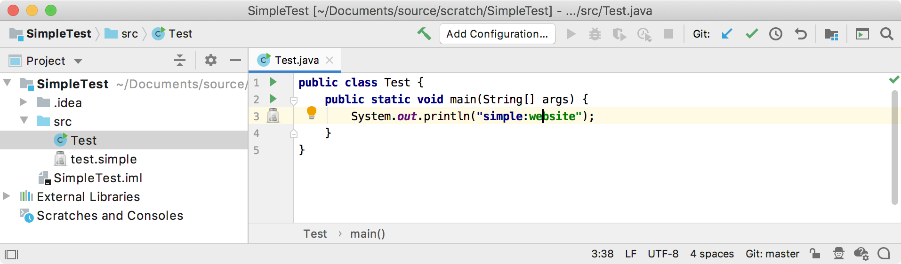
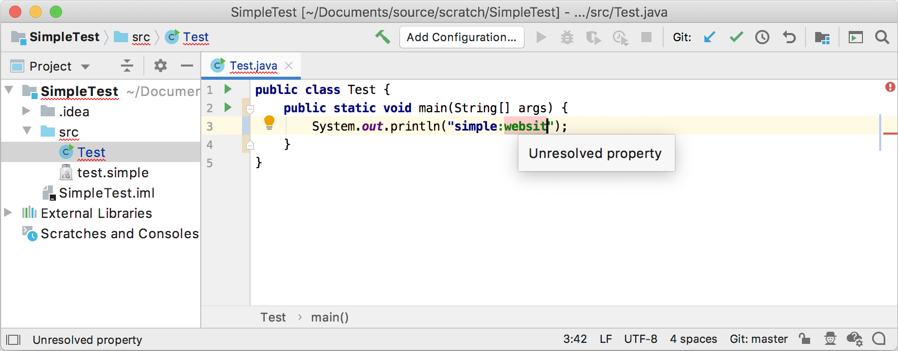

7. Annotator
An Annotator helps highlight and annotate any code based on specific rules. This section adds annotation functionality to support the Simple Language in the context of Java code.
7.1. Define an Annotator
The SimpleAnnotator subclasses Annotator.
Consider a literal string that starts with “simple:” as a prefix of a Simple Language key.
It isn’t part of the Simple Language, but it is a useful convention for detecting Simple Language keys embedded as string literals in other languages, like Java.
Annotate the simple:key literal expression, and differentiate between a well-formed vs. an unresolved property:
// Copyright 2000-2020 JetBrains s.r.o. and other contributors. Use of this source code is governed by the Apache 2.0 license that can be found in the LICENSE file.
package org.intellij.sdk.language;
import com.intellij.lang.annotation.*;
import com.intellij.openapi.project.Project;
import com.intellij.openapi.util.TextRange;
import com.intellij.psi.*;
import org.intellij.sdk.language.psi.SimpleProperty;
import org.jetbrains.annotations.NotNull;
import com.intellij.openapi.editor.DefaultLanguageHighlighterColors;
import java.util.List;
public class SimpleAnnotator implements Annotator {
// Define strings for the Simple language prefix - used for annotations, line markers, etc.
public static final String SIMPLE_PREFIX_STR = "simple";
public static final String SIMPLE_SEPARATOR_STR = ":";
@Override
public void annotate(@NotNull final PsiElement element, @NotNull AnnotationHolder holder) {
// Ensure the Psi Element is an expression
if (!(element instanceof PsiLiteralExpression)) return;
// Ensure the Psi element contains a string that starts with the key and separator
PsiLiteralExpression literalExpression = (PsiLiteralExpression) element;
String value = literalExpression.getValue() instanceof String ? (String) literalExpression.getValue() : null;
if ((value == null) || !value.startsWith(SIMPLE_PREFIX_STR + SIMPLE_SEPARATOR_STR)) return;
// Define the text ranges (start is inclusive, end is exclusive)
// "simple:key"
// 01234567890
TextRange prefixRange = TextRange.from(element.getTextRange().getStartOffset(), SIMPLE_PREFIX_STR.length() + 1);
TextRange separatorRange = TextRange.from(prefixRange.getEndOffset(), SIMPLE_SEPARATOR_STR.length());
TextRange keyRange = new TextRange(separatorRange.getEndOffset(), element.getTextRange().getEndOffset() - 1);
// Get the list of properties from the Project
String possibleProperties = value.substring(SIMPLE_PREFIX_STR.length() + SIMPLE_SEPARATOR_STR.length());
Project project = element.getProject();
List<SimpleProperty> properties = SimpleUtil.findProperties(project, possibleProperties);
// Set the annotations using the text ranges.
Annotation keyAnnotation = holder.createInfoAnnotation(prefixRange, null);
keyAnnotation.setTextAttributes(DefaultLanguageHighlighterColors.KEYWORD);
Annotation separatorAnnotation = holder.createInfoAnnotation(separatorRange, null);
separatorAnnotation.setTextAttributes(SimpleSyntaxHighlighter.SEPARATOR);
if (properties.isEmpty()) {
// No well-formed property found following the key-separator
Annotation badProperty = holder.createErrorAnnotation(keyRange, "Unresolved property");
badProperty.setTextAttributes(SimpleSyntaxHighlighter.BAD_CHARACTER);
// ** Tutorial step 18.3 - Add a quick fix for the string containing possible properties
badProperty.registerFix(new SimpleCreatePropertyQuickFix(possibleProperties));
} else {
// Found at least one property
Annotation annotation = holder.createInfoAnnotation(keyRange, null);
annotation.setTextAttributes(SimpleSyntaxHighlighter.VALUE);
}
}
}
7.2. Register the Annotator
Using the com.intellij.annotator extension point in the plugin configuration file, register the Simple Language annotator class with the IntelliJ Platform:
<extensions defaultExtensionNs="com.intellij">
<annotator language="JAVA" implementationClass="org.intellij.sdk.language.SimpleAnnotator"/>
</extensions>
7.3. Run the Project
As a test, define the following Java file containing a Simple Language prefix:value pair:
public class Test {
public static void main(String[] args) {
System.out.println("simple:website");
}
}
Open this Java file in an IDE Development Instance running the simple_language_plugin to check if the IDE resolves a property:

If the property is an undefined name, the annotator flags the code with an error.

Try changing the Simple Language color settings to differentiate the annotation from the default language color settings.